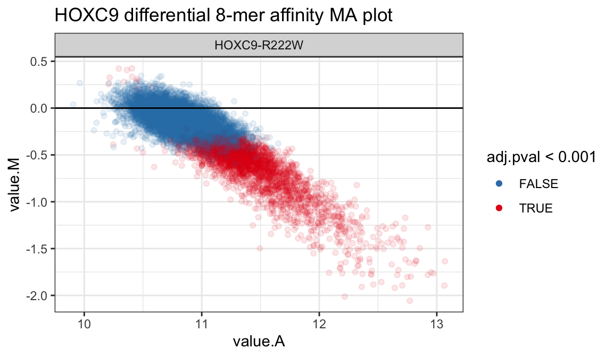

vignettes/upbm.Rmd
upbm.RmdAbstract
“Protein binding microarrays (PBMs) allow for the high-throughput quantification of DNA binding specificities of proteins, such as transcription factors, in vitro. While several probe designs have been proposed for PBMs, universal PBMs (uPBMs) designed to cover all 10-mer DNA sequences, have enjoyed the most wide-spread adoption. The upbm package provides tools and methods for organizing probe-level PBM data from raw GPR scan files, summarizing PBM data at K-mer resolution, and performing statistical inference when replicate experiments are available. The package was developed for the analysis of uPBMs, but should be appropriate for many other PBM designs as well. upbm package version: 0.99.0”
While a large collection of methods and software packages have been developed for the processing and analysis of traditional DNA microarrays, the development of tools for protein binding microarrays (PBMs) has been limited. Due to the substantial difference of what is being measured by PBMs (protein-DNA binding) and DNA microarrays (nucleic acid hybridization), blindly applying DNA microarray tools to PBM data can lead to unexpected problems.
This package provides tools and methods for reading, processing, and analyzing PBM data in R using standard Bioconductor data structures. The primary focus is on universal-design PBMs (uPBMs) which provide approximately uniform coverage of all 8-mer DNA sequences across probes on the array (Berger et al. 2006).
suppressPackageStartupMessages(library("upbm"))In this vignette we demonstrate the typical analysis steps with the upbm package. Here, and in other vignettes, data from a triplicate series of PBM experiments are used to illustrate the features of the package. While this vignette covers only the basics of the upbm package, more details on the object classes (PBMExperiment and PBMDesign) and pre-processing functions are also provided in separate vignettes.
The dataset includes GenePix Results (GPR) data from Alexa488 scans for wild type human transcription factor (TF) HOXC9 and three allelic variants (K195R, R193K, R222W). Corresponding Cy3 scans are also included for all arrays. Each array was scanned for Alexa488 fluorescence at multiple PMT gains and Cy3 at a single PMT gain. The series comes from a larger set of experiments studying the effect of allelic variants on human transcription factor binding (manuscript in preparation). The HOXC9 data objects are stored in a separate upbmData package for convenience and include a table of sample metadata (hoxc9table), a PBMExperiment of Alexa488 scan data (hoxc9alexa), and a PBMExperiment of Cy3 scan data (hoxc9cy3).
data(hoxc9table, package = "upbmData")
data(hoxc9alexa, package = "upbmData")
data(hoxc9cy3, package = "upbmData")Metadata for Alexa488 and Cy3 scans are provided in the sample table.
# # A tibble: 40 x 11
# gpr date version id reuse type pmt idx target condition
# <chr> <dbl> <chr> <dbl> <dbl> <chr> <dbl> <dbl> <chr> <chr>
# 1 ./PB… 170606 v14 226 1 Alexa 400 2 HOXC9 HOXC9-REF
# 2 ./PB… 170606 v14 226 1 Alexa 400 3 HOXC9 HOXC9-R1…
# 3 ./PB… 170606 v14 226 1 Alexa 400 6 HOXC9 HOXC9-K1…
# 4 ./PB… 170606 v14 226 1 Alexa 450 2 HOXC9 HOXC9-REF
# 5 ./PB… 170606 v14 226 1 Alexa 450 3 HOXC9 HOXC9-R1…
# 6 ./PB… 170606 v14 226 1 Alexa 450 6 HOXC9 HOXC9-K1…
# 7 ./PB… 170606 v14 226 1 Alexa 450 7 HOXC9 HOXC9-R2…
# 8 ./PB… 170606 v14 226 1 Alexa 500 2 HOXC9 HOXC9-REF
# 9 ./PB… 170606 v14 226 1 Alexa 500 3 HOXC9 HOXC9-R1…
# 10 ./PB… 170606 v14 226 1 Alexa 500 6 HOXC9 HOXC9-K1…
# # … with 30 more rows, and 1 more variable: id_idx <chr>Several important metadata variables are recorded in the table - notably, type (scan type), gpr (path to the GPR file), lp (PMT gain of the scan), and condition (HOXC9 allele). Details on how the raw GPR files for the HOXC9 data can be accessed and loaded to create hoxc9table, hoxc9alexa, and hoxc9cy3 are described in the upbmData vignette.
The HOXC9 example data includes multiple Alexa488 scans of each array at different PMT gains. Since we only require a single scan for each array, we pick a high PMT gain value for each replicate with no probe intensities reaching saturation (intensity = 2^16). In this case, since all samples were scanned at PMT gain 450, we will use these. Since probe log intensities scale linearly with PMT gain, any differences will be corrected during normalization steps, and the exact choice of PMT gain value is largely unimportant.
In the interest of keeping the run time of this vignette manageable, we also reduce the dataset from the wild type and three allelic variants to just the wild type allele and a single variant allele (HOXC9-R222W).
alexa_subset <- alexa_subset[, colData(alexa_subset)$condition %in%
c("HOXC9-REF", "HOXC9-R222W")]
cy3_subset <- hoxc9cy3[, colData(hoxc9cy3)$id_idx %in%
colData(alexa_subset)$id_idx]“Tidy data” has become a popular and powerful framework for organizing data during interactive analysis. In the tidy data framework, data is organized as a data.frame with each row corresponding to an individual obervation or sample. Not only does the tidy data framework help keep data organized, but it also unlocks the powerful data parsing and visualization functions in the Tidyverse collection of packages.
To keep track of various probe and sample metadata compactly, uPBM data are not organized as tidy data. Instead, they are stored as PBMExperiment and PBMDesign objects which extend core Bioconductor data structures (see separate vignette: upbm: Class Details). However, when performing interactive analysis, it can be useful to extract tidy data from the PBMExperiment objects. This is made possible with the broom::tidy function originally defined in the broom package.
The data for a single assay in PBMExperiment and SummarizedExperiment objects can be returned in wide or long format by passing the objects to broom::tidy.
broom::tidy(alexa_subset, assay = "fore", long = FALSE)## # A tibble: 41,944 x 10
## s4 s7 s17 s20 s33 s34 Column Row probeID Sequence
## <dbl> <dbl> <dbl> <dbl> <dbl> <dbl> <int> <int> <chr> <chr>
## 1 9522 1137 2305 2478 766 2225 6 1 dBr_1433… GGTGTGAGTCCA…
## 2 18050 1209 4903 2662 1582 1442 7 1 dBr_0620… CAGTCTAAGTTT…
## 3 19591 1140 4365 2523 1539 2074 8 1 dBr_3931… CTTTTTAAAGAC…
## 4 4150 720 1029 1307 297 1068 9 1 dBr_0698… CAGCTACGGAAG…
## 5 4499 708 966 1583 342 1334 10 1 dBr_0507… GCTTCGAACGTG…
## 6 16744 1298 3956 2889 719 1593 15 1 dBr_1618… CGCCCGTGGTAA…
## 7 7032 812 2215 1564 542 1345 23 1 dBr_2006… TTAGCCCGTTGT…
## 8 3493 558 1411 1180 330 927 24 1 dBr_2554… TGCACAAGCGAT…
## 9 3231 725 1244 1968 271 761 26 1 dBr_4062… GGATGCCTCTTC…
## 10 4323 663 1157 1408 340 950 27 1 dBr_2181… GTCAGAACCTCG…
## # … with 41,934 more rowsbroom::tidy(alexa_subset, assay = "fore", long = TRUE)## # A tibble: 251,664 x 16
## Column Row probeID Sequence cname value date version id reuse
## <int> <int> <chr> <chr> <chr> <dbl> <dbl> <chr> <dbl> <dbl>
## 1 6 1 dBr_14… GGTGTGA… s4 9522 170606 v14 226 1
## 2 7 1 dBr_06… CAGTCTA… s4 18050 170606 v14 226 1
## 3 8 1 dBr_39… CTTTTTA… s4 19591 170606 v14 226 1
## 4 9 1 dBr_06… CAGCTAC… s4 4150 170606 v14 226 1
## 5 10 1 dBr_05… GCTTCGA… s4 4499 170606 v14 226 1
## 6 15 1 dBr_16… CGCCCGT… s4 16744 170606 v14 226 1
## 7 23 1 dBr_20… TTAGCCC… s4 7032 170606 v14 226 1
## 8 24 1 dBr_25… TGCACAA… s4 3493 170606 v14 226 1
## 9 26 1 dBr_40… GGATGCC… s4 3231 170606 v14 226 1
## 10 27 1 dBr_21… GTCAGAA… s4 4323 170606 v14 226 1
## # … with 251,654 more rows, and 6 more variables: type <chr>, pmt <dbl>,
## # idx <dbl>, target <chr>, condition <chr>, id_idx <chr>Notice that when long = FALSE, the output contains only rowData and the values of the assay as a tibble with dimensions matching the input PBMExperiment. Here, each row corresponds to a single probe. When long = TRUE, a longer tibble is returned with each row corresponding to a single probe and single sample (column) of the input PBMExperiment. In the longer format, colData is also included in the output. When the object is a PBMExperiment object, only probes passing the filtering criteria specified in the PBMDesign object are included in the output (for more details, see: upbm: Class Details). In this case, this includes all probes with probe IDs prefixed by dBr_, corresponding to the subset of de Bruijn sequence probes on the array.
Using the example data included in the upbmData package, we first quickly demonstrate how GPR data can be analyzed to obtain 8-mer-level affinity summaries and used to perform differential affinity analysis. Data analysis proceeds in the following steps:
First, input data should be available as GenePix Results (GPR) files, with each GPR file corresponding to a single sample scan. Metadata for the GPR files, including paths to the files, must be organized in a data.frame with each row corresponding to a scan (see hoxc9table above). The path to the GPR file must be specified in a column named gpr. The data.frame should also include any relevant metadata about the scan and sample (e.g. scan parameters or properties of the assayed protein). Both Alexa488 and Cy3 scans for the example dataset in the upbmData package are provided in hoxc9table.
GPR files listed in the data.frame are read in using gpr2PBMExperiment(..). If possible, a corresponding probe design should also be specified. The probe design should be a PBMDesign object. PBMDesign objects for standard uPBM designs have been made available in the upbmAux package, including the standard 8x60k design used for this dataset.
## Column Row probeID
## 1 1 1 GE_BrightCorner
## 2 2 1 GE_BrightCorner
## 3 3 1 DarkCorner
## 4 4 1 DarkCorner
## 5 5 1 Cbf_5b_Hi_n359_o2_r1
## 6 6 1 dBr_14334_Jan07
## Sequence
## 1 #N/A
## 2 #N/A
## 3 #N/A
## 4 #N/A
## 5 GAAGCTATTCAGATCGACGTGACATGTATATAGTAGGTCTGTGTTCCGTTGTCCGTGCTG
## 6 GGTGTGAGTCCATTTCGTCAAACCAACGCAACAGGTGTCTGTGTTCCGTTGTCCGTGCTGWe split the data.frame by scan type to create separate Alexa488 and Cy3 PBMExperiment objects. Note that the following lines of code are not evaluated in this vignette since the corresponding GPR files are not included in this package.
hoxc9alexa <- gpr2PBMExperiment(scans = dplyr::filter(hoxc9table, type == "Alexa"),
probes = pbm_8x60k_v1)
hoxc9cy3 <- gpr2PBMExperiment(scans = dplyr::filter(hoxc9table, type == "Cy3"),
probes = pbm_8x60k_v1)After the Alexa488 and Cy3 GPR files have been read in as PBMExperiment objects, we perform basic pre-processing on the probe intensities of each assay. Preprocessing includes [1] background subtraction, [2] Cy3 normalization, [3] spatial adjustment, [4] within and [5] across replicate (plate) normalization. To illustrate these steps, we use the subsetted PBMExperiment objects, alexa_subset and cy3_subset. While each pre-processing step can be run separately, a single wrapper function, upbmPreprocess(..) is provided to quickly perform all pre-processing steps on properly formatted PBM data. Details on each step is provided in a separate vignette. Here, we run all steps with the default parameters.
To perform Cy3 normalization, in addition to the Cy3 scan data, we need a reference distribution of expected Cy3 intensities (generated by cy3GenerateRef(..)). A reference set generated using 90 Cy3 scans is included in the upbmAux package.
data(refcy3_8x60k_v1, package = "upbmAux")Using this reference distribution, we perform pre-processing. By default, Alexa488 and Cy3 scans specified to upbmPreprocess(..) are expected to contain colData columns named id_idx which can be used to map scans across the two PBMExperiment objects. While the id_idx column may include repeated values in the Alexa488 data, the values must be unique for the Cy3 data. Additionally, the colData of the Alexa488 PBMExperiment is expected to have two additional columns, id and condition, corresponding to replicate (plate) and condition IDs, respectively. These labels are needed to perform within and between replicate normalization. Additionally, a reference condition is expected to exist in the condition colData column. The reference condition is identified by checking for conditions ending in -REF. These parameters may all be modified to specify different reference conditions and colData columns.
By default upbmPreprocess(..) will provide a weakly verbose log of the normalization steps.
alexa_normed <- upbmPreprocess(alexa_subset, cy3_subset, cy3refpe = refcy3_8x60k_v1)## || upbm::upbmPreprocess
## || - Starting PBM data preprocessing.
## || - 6 Alexa488 PBM scans.
## || - 6 Cy3 PBM scans.
## ||
## || Background intensity subtraction ...
## || ... finished!
## ||
## || Cy3 normalization using [ cy3FitEmpirical ] ...
## || ... finished!
## ||
## || Spatial adjustment ...
## || ... finished!
## ||
## || Within-replicate normalization ...
## || ... finished!
## ||
## || Cross-replicate normalization ...
## || ... finished!
## ||
## || Finished PBM data preprocessing.
## || Returning PBMExperiment with 41944 rows and 6 columns.The returned object is a PBMExperiment with the same name number of columns as the original Alexa488 PBMExperiment object. The number of rows is decreased to only include probes designated as signal probes based on filtering criteria specified as part of the corresponding PBMDesign.
After normalization, probe-level intensities are aggregated across replicates by fitting a probe-level model. Again, a condition column is expected to exist in the colData of the PBMExperiment object.
alexa_pfit <- probeFit(alexa_normed)A PBExperiment object is returned with columns corresponding to the unique values of the colData condition column (here, HOXC9-R222W, HOXC9-REF).
Next, the probe-level summaries aggregated across replicates are used to obtain K-mer-level summaries. A helper function, uniqueKmers(..) is provided for generating the full set of K-mers of a specified length (unique to reverse complementation, i.e. only one of AAAACCCC and GGGGTTTT is included). Performing K-mer inference on the full set of 8-mers can take close to a minute for each condition. While this is not a large amount of time, it is too long for the purpose of illustrating the function in this vignette. Therefore, while not recommended in practice, we fit the K-mer-level summaries for only a subset of randomly selected K-mers.
set.seed(1L)
kmer_subset <- sample(uniqueKmers(8L), 1e4)
alexa_kfit <- kmerFit(alexa_pfit, kmers = kmer_subset) ## for illustration only, see aboveThe result is a SummarizedExperiment with K-mer-level affinity and variance estimates for each condition, with rows now corresponding to K-mers rather than probes.
## class: SummarizedExperiment
## dim: 10000 2
## metadata(1): baseline
## assays(5): affinityEstimate affinityVariance contrastDifference
## contrastAverage contrastVariance
## rownames: NULL
## rowData names(1): seq
## colnames(2): HOXC9-R222W HOXC9-REF
## colData names(0):Finally, these k-mer affinities can be used to perform K-mer-level inference. To test for differential 8-mer affinity across conditions, between a baseline condition (e.g. the wild type HOXC9 TF) and all other conditions, we make a call to kmerTestContrast(..). This step should be relatively quick since estimates of affinity and variance have already been computed in the previous step. Note, if a different baseline condition should be used, this should be specified to the earlier kmerFit function. Other methods for inference are also defined in kmerTestAffinity(..) and kmerTestSpecificity(..).
alexa_kdiff <- kmerTestContrast(alexa_kfit)The resulting object is again a SummarizedExperiment with assays containing the results of differential affinity testing.
## class: SummarizedExperiment
## dim: 10000 2
## metadata(0):
## assays(6): contrastAverage contrastDifference ... contrastP
## contrastQ
## rownames: NULL
## rowData names(1): seq
## colnames(2): HOXC9-R222W HOXC9-REF
## colData names(0):K-mer level averages and differences across conditions are included in the contrastAverage and contrastDifference assays. FDR-controlling adjusted p-values are included in the contrastQ assay. We can tidy the results using broom::tidy as described above, and visualize the results as an MA plot.
suppressPackageStartupMessages(library("ggplot2"))
diffdat <- dplyr::left_join(broom::tidy(alexa_kdiff, "contrastAverage", long = TRUE),
broom::tidy(alexa_kdiff, "contrastDifference", long = TRUE),
by = c("seq", "cname"), suffix = c(".A", ".M"))
diffdat <- dplyr::left_join(diffdat,
broom::tidy(alexa_kdiff, "contrastQ", long = TRUE),
by = c("seq", "cname"))
diffdat <- dplyr::filter(diffdat, !is.na(value))
diffdat <- dplyr::rename(diffdat, adj.pval = value)
ggplot(diffdat, aes(x = value.A, y = value.M, color = adj.pval < 0.001)) +
geom_point(alpha = 1/10) +
geom_hline(yintercept = 0) +
scale_color_brewer(palette = "Set1", direction = -1) +
theme_bw() +
guides(color = guide_legend(override.aes = list(alpha = 1))) +
facet_grid(. ~ cname) +
ggtitle("HOXC9 differential 8-mer affinity MA plot")
Barrera, Luis A, Anastasia Vedenko, Jesse V Kurland, Julia M Rogers, Stephen S Gisselbrecht, Elizabeth J Rossin, Jaie Woodard, et al. 2016. “Survey of Variation in Human Transcription Factors Reveals Prevalent Dna Binding Changes.” Science 351 (6280): 1450–4.
Berger, Michael F, and Martha L Bulyk. 2009. “Universal Protein-Binding Microarrays for the Comprehensive Characterization of the Dna-Binding Specificities of Transcription Factors.” Nature Protocols 4 (3): 393–411.
Berger, Michael F, Anthony A Philippakis, Aaron M Qureshi, Fangxue S He, Preston W Estep III, and Martha L Bulyk. 2006. “Compact, Universal Dna Microarrays to Comprehensively Determine Transcription-Factor Binding Site Specificities.” Nature Biotechnology 24 (11): 1429–35.
Jiang, Bo, Jun S Liu, and Martha L Bulyk. 2013. “Bayesian Hierarchical Model of Protein-Binding Microarray K-Mer Data Reduces Noise and Identifies Transcription Factor Subclasses and Preferred K-Mers.” Bioinformatics 29 (11): 1390–8.